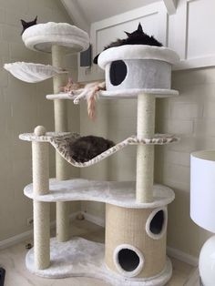
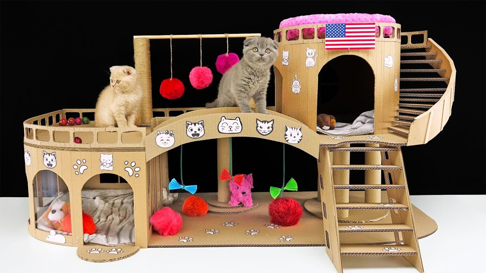
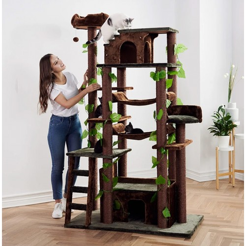
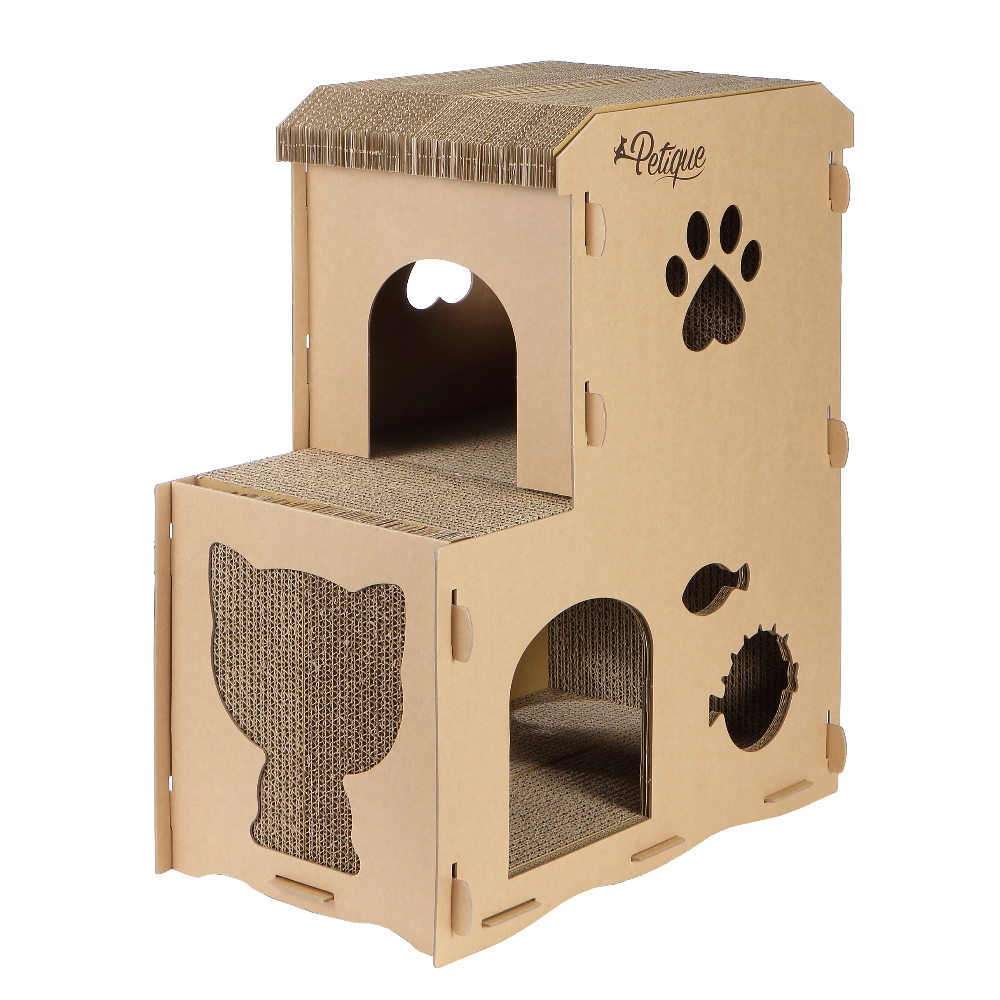
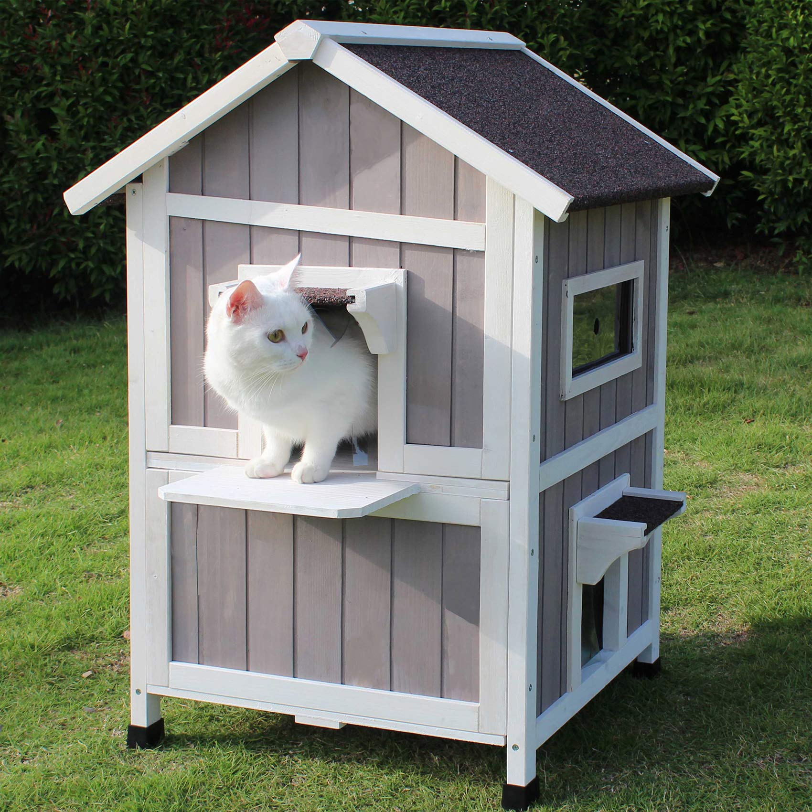

A cat house is a cattery, a place where cats are housed. A good size shelter should be 2 feet by 3 feet and at least 18 inches high. Larger isn't always better, because the heat will disperse quickly, and the cats will need a warm shelter during the winter. A space large enough for three to five cats to huddle is perfect. All good shelter designs share two qualities: Strong insulation – needed to trap body heat, which turns the cats into little radiators. Use straw, not hay or blankets. Minimal air space – a smaller interior area means that less heat is needed to keep the occupants warm. Your cats will be warmer and cozier if they can burrow into insulating materials you've placed inside their shelters. Straw is perfect - it's loose, dry and provides added insulation. Shredded newspaper will work as well.
|  |  |  |  |  |